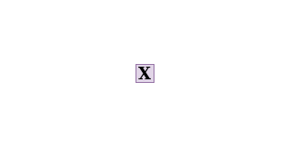
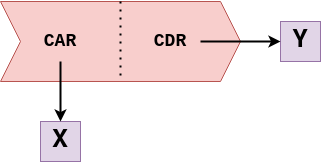
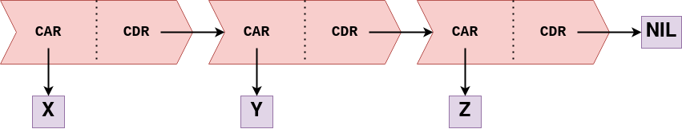
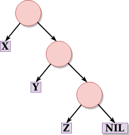
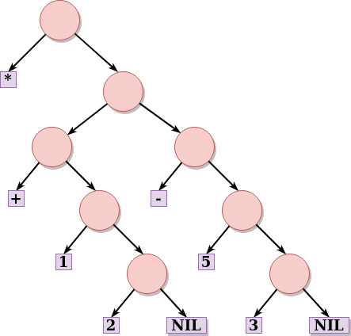
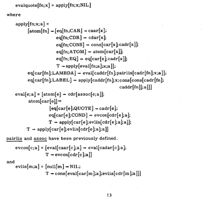

Early LISP History (1956 - 1959) ~ Herbert Stoyan
History of Lisp ~ John McCarthy
Revenge of the Nerds ~ Paul Graham
Lets LISP like it’s 1959 // LISP and the foundations of computing
“Programming is the problem of describing procedures or algorithms to an electronic calculator.”
~ John McCarthy, The Programming Problem
Un lenguaje de programación para Inteligencia Artificial Simbólica.
McCarthy busca un lenguaje: Explicito, universal, conciso.
Una respuesta al modelo secuencial (la máquina de Turing) y al paradigma imperativo (FORTRAN).
Idea
En los 50 se empiezan a desarrollar los primeros lenguajes de alto nivel (FLOW-MATIC, FORTRAN)
En 1956, en una conferencia de AI, McCarthy se inspira para comenzar a diseñar LISP (LISt Proccessing) usando:
Las ideas de procesamiento de listas y recursión de IPL-II
El alto nivel de FORTRAN (1957) y su expresión algebraica.
La notación del cálculo Lambda de Alonzo Church.
λx . x+x
Lambda calculus ~ Computerphile
Whiteboard problems in pure Lambda calculus
The Awesome Power of Theory, Explorations in the untyped lambda calculus ~ Ron Garret
“An Unsolvable Problem Of Elementary Number Theory” (1936) ~ Alonzo Church
“Can Programming Be Liberated from the von Neumann Style?” (1977) ~ John Backus
No hay estado interno
Solo tiene:
Identificadores (variables)
Expresiones lambda (construcción de funciones)
Aplicación de funciones
Church–Turing thesis: la notación Lambda es formalmente equivalente a una máquina de Turing
Definición
“An Algebraic Language for the Manipulation of Symbolic Expression” (1958) ~ John McCarthy
Primer diseño (incompleto) de LISP.
Comienzos de la programación funcional.
Especificación completa de LISP, un lenguaje teórico, que no estaba pensado para ser implementado.
Solución más comprensible a la máquina de Turing.
Para demostrar que es Turing-Completo, define una “función universal de LISP”, que luego llegaría a ser eval.
Implementación
1960: Steve Russell, un alumno de McCarthy, decide probar e implementar en código máquina eval
1962: Tim Hart y Mike Levin hacen el primer compilador de LISP.
Lo más cercano al LISP que conocemos hoy en día.
Funciones compiladas e interpretadas pueden ser intercambiadas libremente.
What Made Lisp Different ~ Paul Graham
Influential Programming Languages, Lisp ~ David Chisnall
if-then-else: Las expresiones condicionales fueron definidas en el paper de 1960, con cond. Un condicional es un una construcción if-then-else; hoy en día los damos por hecho. Fueron inventados por McCarthy en el transcurso de desarrollo de Lisp.
Funciones: Las funciones son objectos de primera clase, son un tipo de dato como lo son los enteros, cadenas, etc. Tienen una representación literal, pueden ser asignadas a variables, pasadas como argumentos (parámetros)…
Recursión: Ya existía matemáticamente, pero nunca en un lenguaje de programación
Un nuevo concepto en variables: Todas las variables son efectivamente punteros. Los valores son aquellos que tienen tipos, no variables. Asignar variables significa copiar punteros, y no aquello a lo que apuntan.
Garbarge Collection: Con un diseño primitivo (no era concurrente), LISP fue el primer lenguaje en utilizar garbage collection automático.
Tipado dinámico: No hay que explicitar si algo es un átomo o una lista.
Interactividad: Gracias al interprete REPL se tiene feedback inmediato y se puede programar desde abajo para arriba, compilando incrementalmente.
El lenguaje completo está siempre disponible: No hay una distinción real entre tiempo de lectura, tiempo de compilación y tiempo de ejecución. Uno puede compilar o ejecutar mientras lee, leer o ejecutar código mientras compila, leer o compilar mientras se ejecuta el código.
Map y Reduce: LISP fue el primer lenguaje en implementar dos funciones muy importantes en la programación funcional.
;; Todo en LISP se compone de symbolic expressions
1 ; Una s-expression puede ser un átomo -> irreducible
(+ 1 2) ; Una s-expression puede ser una lista -> partible
;; Las s-expressions evaluan a valores
2 ; evalua a 2
(+ 2 3) ; evalua a 5
(+ (+ 2 3) 2) ; (+ 2 3) evalua a 5 -> todo evalua a 7
;; Acá comienza la dualidad entre código (la lista) y data (el átomo)
;; Ambos son S-expressionseval, quote;; El operador quote toma una s-expression y devuelve el código
(+ 1 1) ; evalua a 2
(quote (+ 1 1)) ; evalua a (+ 1 1)
('(+ 1 1)) ; quote se abrevia a '
;; El operador eval toma una s-expresion y devuelve su valor
(eval (+ 1 1)) ; evalua a 2
(eval '(+ 1 1)) ; evalua a 2
(eval ''(+ 1 1)) ; evalua a (+ 1 1)
;; 1 + 1 es 2
;; "1 + 1" es el código 1 + 1Puedo hacer un programa entero, ponerle un ' adelante, y estoy tratando con el código de mi programa.
atom, listp¿Es código o data?
;; atom devuelve si algo es un átomo o no
(atom 1) ; True (el valor de la expresion 1 es un átomo)
(atom (+ 1 2)) ; True (el valor de la expresion (+ 1 2) es un átomo)
(atom '(+ 1 2)) ; Nil (la expresion (+ 1 2) es una lista)
;; listp devuelve si algo es una lista o no
(listp 1) ; Nil (1 no es una lista)
(listp (+ 1 2)) ; Nil (la expresion evalua a 3, no es una lista)
(listp '(+ 1 2)) ; True (estoy hablando del código de la expresion, la lista)car, cdr, cons y list;; car recibe una lista y devuelve su primer elemento
(car (+ 1 2)) ; explota, no recibio una lista
(car '(+ 1 2)) ; devuelve +
;; cdr recibe una lista y devuelve el resto (todo menos el primer elemento)
(cdr '(+ 1 2)) ; devuelve (1 2)
;; cons crea un cons de un valor seguido de una lista
;; AKA agrega un valor al principio de la lista
(cons '1 '(2 3)) ; devuelve (1 2 3)
(cons '+ '(2 3)) ; devuelve (+ 2 3)
;; list compone una lista de sus argumentos
(list 1 2 3) ; devuelve (1 2 3)
(list '+ 2 3) ; devuelve (+ 2 3)
;; si tan solo hubiese una manera de ejecutar esta expresion!;; Partimos de la expresion (+ 1 2)
(+ 1 2)
;; La convertimos en el código de la expresion
'(+ 1 2)
;; Sacamos su operador -> el +
(car '(+ 1 2))
;; Sacamos los operandos -> el (1 2)
(cdr '(+ 1 2))
;; Empaquetamos esto nuevamente -> (+ 1 2)
(cons (car '(+ 1 2)) (cdr '(+ 1 2)))
;; Evaluamos la expresion
(eval (cons (car '(+ 1 2)) (cdr '(+ 1 2))))Poner sources (al menos el cap de structs de ansi common lisp)
Dar ejemplo de que es un struct en lisp, que son los make-struct, struct-tabla, etc
make-hash-table:TEST (testear claves iguales)Ejemplo:
gethash en conjunto con la función setfgethash toma dos argumentos obligatorios: una clave y una tabla de hashremhash para eliminar el par clave-valorhash-table-count* (setq tabla (make-hash-table :test 'equal))
#<HASH-TABLE :TEST EQUAL :COUNT 0 {10058B8553}>
*(hash-table-size tabla)
16 ; por default
*(hash-table-rehash-size tabla)
1.5 ; indica que la tabla se agrandará en un 50% cada vez que necesite crecer.* (time (dotimes (n 1000000) (setf (gethash n tabla) n))) ; le tomo el tiempo que tarda
Evaluation took:
0.162 seconds of real time
0.161954 seconds of total run time (0.137696 user, 0.024258 system)
[ Run times consist of 0.015 seconds GC time, and 0.147 seconds non-GC time. ]
100.00% CPU
355,501,132 processor cycles
83,836,896 bytes consed
NIL
* (hash-table-count tabla)
1000000
* (hash-table-size tabla)
1048576*Se eligió un millón para resaltar los tiempos que tardan
(Ver más sobre esto en informe.md)
maphash: itera sobre todas las claves de la tabla. Devuelve siempre NIL.* (defun imprimir-entrada (clave valor) (format t "El valor asociado a la clave ~S es ~S~%" clave valor)) ; partimos de un hash con 3 claves
IMPRIMIR-ENTRADA
* (maphash #'imprimir-entrada tabla)
El valor asociado a la clave "clave1" es 1
El valor asociado a la clave "clave2" es 2
El valor asociado a la clave "clave3" es 3
NIL
*with-hash-table-iterator: es una macro que convierte el primer argumento en un iterador que en cada invocación devuelve un booleano generalizado que es true si alguna entrada es devuelta, la clave, y el valor. Si no encuentra más claves, devuelve NIL* (with-hash-table-iterator (iterador tabla)
(loop
(multiple-value-bind (entrada clave valor)
(iterador)
(if entrada
(imprimir-entrada clave valor)
(return)))))
El valor asociado a la clave "clave1" es 1
El valor asociado a la clave "clave2" es 2
El valor asociado a la clave "clave3" es 3
NILOtra opción para it
loop: es otra opción para iterarHASH TABLE: http://cl-cookbook.sourceforge.net/hashes.html - https://www.tutorialspoint.com/lisp/lisp_hash_table.htm
En las implementaciones más comunes, es compilado (pero no JIT necesariamente)
LISP es un lenguaje interactivo y dinámico
Tipado fuerte y dinámico
Manifest typing
Funciones y estructuras: defun, defstruct, let
Control de flujo: if, loop
Static (lexical) Scoping
Closures
Namespaces
Manejo de memoria
Manejo de errores
Macros
Code vs Data (Metaprogramming) ~ Computerphile
Why are there so many parentheses in Lisp?
data
No hay interpretación
Números 1
Cadenas "uno"
code
Hay un procesamiento
aritmética 1 + 2
acciones print "uno"
Expression-oriented programming language
Why Racket? Why Lisp? ~ Beautiful Racket
La mayoria de los los lenguajes distinguen entre expresiones y sentencias (statements)
Expresión: frases que son evaluadas
Siempre producen un valor
Suelen no tener efectos secundarios
Sentencias: frases que marcan una acción
No retornan valores
Se ejecutan solamente por sus efectos secundarios
En LISP, todo es una expresiónn
Facil de testear
Código mas expresivo
Anidar expresiones de manera concisa
Transparencia referencial: equals can be replaced by equals
atom

(x)
construct cell

(x . y)

(x . (y . (z . NIL))) === (x y z)

(x y z)

(* (+ 1 2) (- 5 3) )
¿Cómo se representá mi código escrito? árbol de s-expressions
¿Cómo se representá mi programa compilado? árbol de sintaxis abstracta (AST)
La representación interna de mi código es muy parecida a mi código escrito
Homoiconic Example In Many Programming Languages ~ WikiWikiWeb
LISP es un lenguaje simbólico: El código es un ciudadano de primera clase
LISP es homoicónico: su representación interna se infiere leyendo el código
Toda expresión se puede interpretar de las dos maneras.
Se interpreta como data usando quote
Se interpreta como código usando eval
En vez de crear un software para satisfacer todas las necesidades del usuario, podemos crear un software que sea extensible. Es decir, cambiar nuestro programa para que sea un lenguaje de programación, y usuarios avanzados pueden agregar funcionalidad extra si la necesitan.
Lisp es un muy buen lenguaje para crear software extensible porque el lenguaje mismo es extensible: permite escribir código que genera código. En particular las macros permiten extender el lenguaje, cambiar el orden de evaluación y hasta cambiar la sintaxis. Con otros lenguajes no tenemos esta libertad, y cualquier extensión cambio en la sintaxis debería ser implementado de forma oficial por los desarrolladores del lenguaje.
Crear módulos completos para extender la funcionalidad del lenguaje:
defclass, defgeneric, defmethod.map, reduce, sort y remove que corren de forma concurrente, y más.Crear lenguajes de dominio específico cambiando la sintaxis:
CL-INTERPOL: para interpolación de strings.infix: para escribir ecuaciones matemáticas en notación de infijo.¿Aún más? Racket, undialecto de Scheme y parte de la familia de Lisp, está orientado específicamente a crear lenguajes nuevos agregando funcionalidad para convertir código fuente en S-Expressions.
TODO: Comparar con otros lenguajesss
Despues de la teoria, Volver a cl-aristid y al REPL. Expandir macros, compararlos con las versiones canonicas, mostrar los macros definidos, como se definen, como cambian la sintaxis
Esta seccion que sea bien teorica con codigo (pero poco codigo). Los ejemplos ejemplos van en sintaxis
En Lisp, una macro es una función que genera código de Lisp. La forma más sencilla de pensarlo sería como una transformación de código. Cuando se llama a una macro en el código:
defmacro de la misma.A partir de esto, se pueden usar macros para simplificar y reutilizar código, o hasta manipular la sintaxis del lenguaje.
Backquote `: Funciona similar a quote. (se explica antes?)Comma ,: Combinado con backquote sirve para “activar y desactivar” el efecto de backquote. Es útil al escribir macros:Comma-at ,@: Dada una expresión que resuelve una lista, se puede utilizar ,@ para reemplazar esta lista por la secuencia de sus mismos elementos (elimina el paréntesis):(nil! x): Cambiar el valor de la variable x a nil. En el ejemplo se puede observar que var se expande al valor que corresponde (por el operador ,), mientras que setq y nil no se evalúan.(defmacro nil! (var)
`(setq ,var nil))
; se llama de la forma
(nil! x)
; genera el código
(setq x nil)(if test then else): Ya se encuentra definida en Lisp. Tiene que ser una macro para evaluar la expresión solo cuando corresponda. Una posible implementación utilizaría la macro cond, que evalúa solo la primer expresión cuya condición sea true:(when test do1 do2 ...): Cuando la expresión test devuelve true, se ejecutan todas las expresiones do, devolviendo el valor de la última. Para que se expandan todas las expresiones do se las combina en una lista &rest body y luego se utiliza el operador ,@:(defmacro our-when (test &rest body)
`(if ,test
(progn
,@body)))
; se llama de la forma
(when test do1 do2 do3)
; genera el código
(if (eligible obj)
(progn do1
do2
do3
obj))infix: Las macros permiten cambiar el orden de las expresiones sin evaluarlas. Entonces, se podría hacer una macro infix para tener operadores matemáticos en notación de infijo en vez de la notación polaca de Lisp. Existen implementaciones completas de esta macro para que funcione con más de una operación, pero para mostrar la más simple:(defmacro infix (arg1 op arg2)
`(,op ,arg1 ,arg2))
; se llama de la forma
(infix 2 + 3)
; genera el código
(+ 2 3)lcomp: Replicar la sintaxis de compresión de listas de Python.(defmacro lcomp (expression for var in list conditional conditional-test)
(let ((result (gensym)))
`(let ((,result nil))
(loop for ,var in ,list
,conditional ,conditional-test
do (setq ,result (append ,result (list ,expression))))
,result)))
; se llama de la forma
(lcomp x for x in (1 2 3 4 5 6 7) if (= (mod x 2) 0))
; una vez generado y ejecutado el código devuelve
(2 4 6)let:(defmacro let (binds &body body)
'((lambda ,(mapcar #'(lambda (x)
(if (consp x) (car x) x))
binds)
,@body)
,@(mapcar #'(lambda (x)
(if (consp x) (cadr x) nil))
binds)))while:till:for:evalThe Roots of LISP ~ Paul Graham
The Most Beautiful Program Ever Written ~ William Byrd
La magía de LISP es el read–eval–print loop: un entorno donde se toma lo escrito por el programador, se lee, se evalua, se imprime, y luego se vuelve a pedir input
Este self-interpreter es un evaluador meta-circular: esta escrito en LISP y puede evaluar código de LISP.
¿Cómo? Gracias a la función eval, definida por McCarthy en base a 7 operadores que toma como axiomas: quote, atom, eq, car, cdr, cons y cond
[solo mencionar]The average person who writes a C compiler or interpreter requires about 20,000 lines of C to do so, and must be (or become) moderately expert about compilers or interpreters.

That was the big revelation to me when I was in graduate school—when I finally understood that the half page of code on the bottom of page 13 of the Lisp 1.5 manual was Lisp in itself. These were “Maxwell’s Equations of Software!” This is the whole world of programming in a few lines that I can put my hand over.
~ Alan Kay, A Conversation with Alan Kay
;; Anotaciones sobre el código de Paul Graham en Roots of Lisp
; The Lisp defined in McCarthy's 1960 paper, translated into Common Lisp.
; eval recibe una expresion `e` y una lista de argumentos `a` -> El "entorno"
; Básicamente, recibe todo el scope donde estoy parado
(defun eval (e a)
; Es todo un if grande de 4 condiciones que chequean el tipo de la expresion
(cond
; Si es un atomo -> Devuelvo su valor en el entorno
((atom e) (assoc e a))
; Si no es un atomo tiene que ser una lista
; Si es una lista del tipo (atomo...resto) -> Es una función!
; (car e) es el operador
; (cadr e) es (car (cdr e)) que es el primero de los argumentos
((atom (car e))
; Si Es una funcion, ¿que funcion es?
(cond
; Si es quote, solo devuelvo los argumentos de la funcion
((eq (car e) 'quote) (cadr e))
; Para el resto de los axiomas, llamo a esa funcion contra los argumentos
; Como quiero llamar a la operacion contra los valores de los argumentos, llamo a eval
((eq (car e) 'atom) (atom (eval (cadr e) a)))
((eq (car e) 'eq) (eq (eval (cadr e) a)
(eval (caddr e) a)))
((eq (car e) 'car) (car (eval (cadr e) a)))
((eq (car e) 'cdr) (cdr (eval (cadr e) a)))
((eq (car e) 'cons) (cons (eval (cadr e) a)
(eval (caddr e) a)))
; cond tiene que evaluar recursivamente todas las condiciones, hasta encontrar el primer true
; para eso, se define una funcion auxiliar, `evcon` que recorre la lista de parametros y los evalua
((eq (car e) 'cond) (evcon (cdr e) a))
; el caso final es recibir una funcion definida por el usuario
('t (eval (cons (assoc (car e) a)
(cdr e))
a))))
; Si no es un atomo ni una lista que comienza por un atomo, entonces es una lista que comienza por otra cosa
; Si es una lista que comienza con label, evaluo la funcion a la que refiere
((eq (caar e) 'label)
(eval (cons (caddar e) (cdr e))
(cons (list (cadar e) (car e)) a)))
; Si es una lista que comienza con lambda, evaluo sus parametros
((eq (caar e) 'lambda)
(eval (caddar e)
(append (pair (cadar e) (evlis (cdr e) a))
a)))))Se incluyen estadísticas de uso del lenguaje, frameworks y la evolución en los últimos años. Para lenguajes antiguos se incluye información sobre qué lenguajes o técnicas se vieron influenciadas por este lenguaje
http://blockml.awwapps.com/example/example/document.html#sec-6
Hoy, los dialectos de Lisp más ampliamente usados, ademas de Common Lisp, son Scheme (1975),Emacs Lisp (1985) y Clojure (2007).
seq)M-x byte-compile-fileSe mencionan casos reales indicando el motivo por el cual se sabe o se cree que se usa el lenguaje
emacs
crash bandicoot
beating the averages!!!! (http://www.paulgraham.com/avg.html)
https://github.com/CodyReichert/awesome-cl